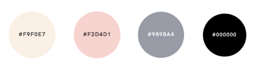
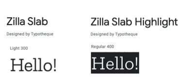

According to the principles of Beautiful web design (2020), there were three items to consider when choosing colours for my website: aesthetic, identity, and usability. As per colour psychology research, colours can affect non-obvious perceptions and have qualities that can elicit emotion in people.
Aiming for a feminine appearance that is fun, constructive, and artistic. I chose a combination of soft colours, pink and beige, with achromatic colours, black and grey, to reflect my identity, a sophisticated, modern feminine-fashion-chic and trendy design.
Pink is the dominant colour on my website, which is a soothing colour synonymous with compassion, kindness, and femininity (Cherry, 2020). Pink is a light red shade associated with softness, generosity, nourishment, and compassion. In contrast to a louder type of pink that eludes sexiness and boldness, I chose a more subdued pink to reflect youth and innocence. For minor info, For a neutral, calm, and calming effect, I used the colour beige. The majority of the text is black, which represents force, beauty, and intensity for this website's important content. Finally, grey reflecting harmony and neutrality.
Typography
I needed to do more research into typography in order to keep the website looking aesthetically pleasing and competent. It was important for me to keep the content appealing and have a positive effect on the website's readability in order to have a positive user experience with no discomfort.
“ It’s the substance of branding, the key to unspoken communication, and an essential piece of the web design pie” (The principles of Beautiful Web Design, 2020)
I used Google fonts after researching the effects of typography and what to consider. I used Zilla Slab as my main font because the smooth curves of this font, combined with a soft colour palette, provided the elegant look I was going for. And, Zilla Slab highlight for titles and the header on the Home page to draw attention while remaining clean and tidy to read.
Two serif fonts from the same family, with reference horizontal lines improving the legibility of the website content.. This style of font is now synonymous with a timeless beauty and sophistication, according to The Principles of Beautiful Web Design (2020), and this is the voice I want to give to my written words.
Accessibility
To make my website more accessible, I first sketched out my concept on paper, then started structuring and organising the content with headers for easy navigation, and I carefully used colours to help distinguish between various sets of content. It was critical to have a scheme in place so that the users could recognise each page as part of the web. According to StardDust CTG, 90% of public and commercial websites are inaccessible to people who use assistive technology to browse the website. To make it easier for the users to understand where they would be routed to, I used descriptive images for links. All images will have alt tags assigned to them, which will include a definition of the image, enabling users to interpret it using a screen reader, for example. As previously said, the font I chose is easy to read; the horizontal lines of this font improve the legibility of the website content, and the colours between the background and text also have contrast, making the content easy to read. Finally, we used Youtube as a source for dynamic content, since it offers closed captions and text alternatives for users with hearing or visual impairments.
Bibliography
Cherry, K., 2020. The Color Psychology of Pink. [online] Verywell Mind. Available at: https://www.verywellmind.com/the-color-psychology-of-pink-2795819 [Accessed 12 April 2021].
Jason Beaird, James George, & Alex Walker. (2020). The Principles of Beautiful Web Design, 4th Edition. SitePoint.
StardDust 2021. 10 Ways to Improve Web Accessibility. [online] Available at: https://www2.stardust-testing.com/en/10-tips-for-web-accessibility [Accessed 14 April 2021].